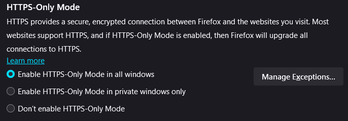

I feel like every time I go on tumblr or bluesky or whatever shit everyone's complaining how everything sucks. I don't feel like anything is worth it like I wake up and spend an hour scrolling shit and then by the end of it who cares. I'm tired.
I'm hoping to spend more time working on this website and I encourage everyone to make their own websites and bookmark a bunch of other personal sites as well. I'm hoping to get into making an RSS feed so if u wanna you can just see these posts, but I don't really plan on doing too much with this.
Anyway thats all bye
I've decided to make a bit of a blog here in order to fill up this first page. So here's what I use when im on my computer.
I use Firefox. It is one of the only browsers that is not based on chromium. Google owns chromium and is cracking down on ad blockers and such, and firefox is much more customizable in my experience. Moving from chrome to Firefox was pretty easy and there's not much that I miss.
If you care about privacy (which you should), I suggest use these two extensions: Ublock Origin, LocalCDN.
Edit as of 2024-01-02:
Turns out that LocalCDN is ALSO not needed, and is covered by Ublock origin. i've been wanting to put this here for a while but i only did it now.
This list was actually a lot longer. I then later found out that a bunch of extensions I used were reduntant or very old. LocalCDN is just a fork of Decentraleyes, which is a lot more updated, Privacy badger and DuckDuckGo Privacy essentials is redundant with blocking trackers with Ublock origin. HTTPS everywhere is just built into Firefox these days, it's this thing:
Firefox in general can be hardened for privacy but there's a lot of stuff that can break functionality and slow things down. Don't do everything on that page blindly, learn what they do first.
Moving on from Firefox, rapid firing some open source programs I use which was originally the fucking point of this blog post: 7Zip (please stop using winrar), Audacity (Use version 3.0.2! It's the latest version without telemetry), Droid-ify, Authenticator Pro (the repository should be included in Droid-ify), Syncthing, and a lot more stuff but thats the stuff i use daily
I would also like to take a moment to recommend Bitwarden. Stop using the same password on every site. This is basic security
Anyway, most people I know already know this stuff, I really just made this in order to get something interesting on this page. Happy surfing.